ゲートを置く/変更するには，まず右上にあるControllをOFFにします．
ControllをOFFにした状態で各ゲートをクリックすると，ゲートの種類が変わります. 測定は仮想測定(仮にそこで状態を測定した場合，どのような状態になるか)です. 測定によって状態は変化しません. Rx, Ry, Rzのゲートは数値を入力できます. 範囲は0~360 (単位は°)です.
| 素子 | 表示 |
|---|---|
| I | |
| 測定 | |
| X | |
| Z | |
| H | |
| S | |
| S† | 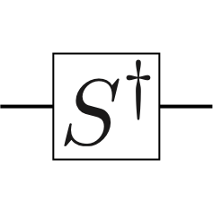 |
| T | |
| T† | 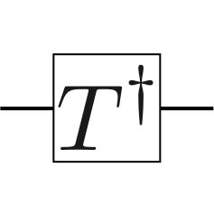 |
| Rx | |
| Ry | |
| Rz | 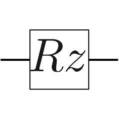 |
制御ゲートを置くには，ControllをONにした状態で各ゲートをクリックすると，ゲートの種類が変わります．
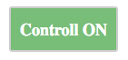
| 素子 | 表示 |
|---|---|
| I | |
| コントロール | |
| X | |
| Z | |
| H | |
| S | |
| S† | 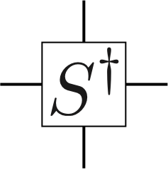 |
| T | |
| T† | 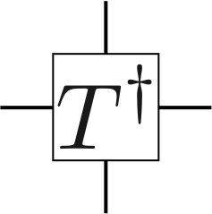 |
| Rx | 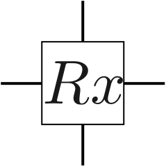 |
| Ry | |
| Rz | 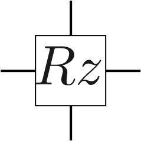 |
制御を変更するには，ControllをOFFにして，制御ゲートをクリックしてください．
for文を作るには，上部にあるForをONにして，forを挿入したいゲートをクリックしてください．
| 素子 | 表示 |
|---|---|
| for start | |
| for end |
qubit数を変更するには，上部にあるAdd qubit/Delete qubitのボタンを押してください．
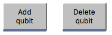
qubit数は1以上の任意の数を取れますが，計算時間が指数関数的に増加するため，増やしすぎないようにしてください．
各qubitに置ける最大ゲート数を変更するには，上部にあるAdd gate/Delete gateのボタンを押してください．
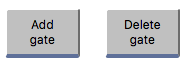
計算を実行するには，上部にあるSimulationのボタンを押してください．
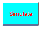
結果は下部に表示されます．素子を何も置かないで実行すると，次のような結果が表示されます．
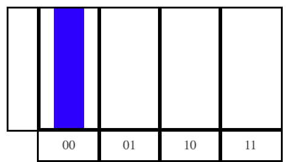
バーの縦軸は観測確率を表します．この場合，状態00の観測確率が1であることを示します． 状態の左側の数字がグラフの上のqubit, 右側の数字がグラフの下のqubitに対応します． 測定素子を置くと，測定素子の位置でもし観測した場合の状態の観測確率が表示されます． 縦方向に同じ位置は同じタイミングとして認識されるので，複数qubitの状態を同時に観測したい場合は気をつけてください． (横方向に)複数の位置に測定素子を置いた場合，測定順にグラフが表示されます． 測定素子を何も置かない場合は，最後に全てのqubitに対して測定をした場合の結果が表示されます．